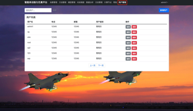
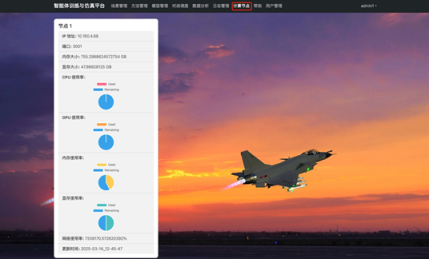
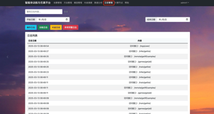

1 范围
1.1 标识
2.标题：智能体训练与仿真软件开发用户手册；
3.术语和缩略语：无。
4.版本号：V01.00
1.2 系统概述
1.2.1 系统和软件的一般特性
规模：系统采用B/S架构，支持多用户（≥200人）并发访问。
安全性：系统具备用户权限细粒度控制，操作日志与审计功能，确保系统操作的安全性和可追溯性。
可靠性：系统设计充分考虑了各类异常情况的处理，确保在复杂环境下稳定运行。
实时性：系统支持实时数据交互，满足智能体训练和仿真推演的实时性要求。
技术风险：项目采用成熟的技术框架和算法库，降低了技术风险。
1.2.2 系统开发、运行和维护历史
本项目自立项以来，经过需求分析、系统设计、开发实施等阶段，目前已进入测试与调试阶段。系统运行稳定，尚未发现重大问题。项目开发方将负责系统的持续优化和维护。
1.2.3 项目相关方
用户：北京机电工程研究所
开发方：
保障机构：
运行现场：北京机电工程研究所
1.3 文档概述
《智能体训练与仿真平台软件用户使用说明》是对智能体训练与仿真平台实验平台进行使用说明，旨在帮助用户了解和正确使用该软件。其主要用途包括：
1.为用户提供软件功能、操作流程和使用方法的详细指南，使用户能够快速上手并熟练运用软件的各项功能。
2.作为用户在使用软件过程中的参考手册，帮助用户解决可能遇到的问题，确保软件的正常使用和用户任务的顺利完成。
2 引用文档
1.《智能体训练与仿真软件开发合同》；
2.《智能体训练与仿真软件开发需求规格说明》
3.《GJB 6935-2009 军用仿真术语》；
4.《GJB 438C-2021 军用软件开发文档通用要求》；
5.《GJB 2786A-2009 军用软件开发通用要求》。
3 软件综述
3.1 软件应用
本软件旨在支撑战役级作战实验平台项目中的智能训练相关研究，其核心应用在于基于人工智能技术实现计算机兵力生成与仿真推演，为智能体在复杂对抗环境中的高水平对抗和能力提升提供关键支撑。通过该软件，用户能够开展一系列与智能体训练和仿真相关的操作，包括以下方面：
3.1.1 智能体训练与管理
利用软件提供的训练环境，用户可以基于仿真推演实时数据驱动智能体训练，实现大规模强化学习训练。例如，针对不同作战场景下的智能体，如在蓝方来袭目标场景中，训练红方兵力部署位置推荐及优化；在来袭场景下，训练红方拦截策略；基于红方优化的兵力部署及拦截策略，开展蓝方巡航导弹与飞机航路规划等。
软件支持对智能体模型的全方位管理，涵盖模型的创建、训练、评估、优化以及版本控制等功能。用户能够借助算法库管理模块选择合适的算法（如多种基础机器学习算法和主流强化学习算法）进行模型训练，并通过模型版本管理模块对模型进行版本化管理，包括版本创建、更新、回滚和删除等操作，同时支持不同版本模型的性能对比与回溯。
3.1.2 仿真推演与作战模拟
提供逼真的仿真环境，能够解析 战役 级作战平台的作战态势，基于 战役 级实验平台引擎实现实时数据交互，从而支持用户进行复杂的作战模拟。在模拟过程中，用户可以根据不同的作战想定和场景需求，灵活配置作战参数，如兵力部署、武器装备使用等，以观察和分析不同策略下的作战结果。
软件具备强大的对抗调度能力，在仿真推演中实现智能体之间的有效对抗。通过对战调度模块，将接收到的态势数据转换为智能体可理解的输入，并将智能体的动作指令转化为仿真环境可执行的操作，确保对抗过程的真实性和有效性。
同时，软件还能对对抗效果进行多维度评估，为用户提供评估指标体系和详细的评估数据采集，帮助用户深入了解对抗策略的优劣，以便进一步优化策略。
3.1.3 数据管理与分析
在训练数据管理方面，用户可以对原始训练数据集进行管理，包括数据的采集、预处理（如归一化、数据增强、缺失值处理等）以及数据划分（如训练集、验证集、测试集的比例设定），确保数据符合模型训练要求，提高模型训练效果。
软件提供了对模型训练过程和结果数据的管理与分析功能。通过训练过程监控，用户可以实时获取每批次训练的损失值、准确率等信息，以及训练时间戳、GPU/CPU 使用率等硬件资源利用情况，从而及时调整训练参数和优化训练配置。同时，软件还能生成可视化报告，涵盖训练关键指标、曲线和性能评估等，帮助用户直观了解模型训练状态和性能表现，为模型优化提供数据支持。
3.1.4 用户协作与管理
支持多用户（≥200 人）并发访问，满足团队协作或多人同时使用软件进行训练和研究的需求。通过用户权限与角色管理模块，管理员可以对用户权限进行细粒度控制，创建、修改和删除角色，并基于角色为用户分配相应权限，如普通用户和管理员具有不同的操作权限，确保系统操作的安全性和可控性。同时，操作日志与审计功能记录用户的操作日志，方便管理员监控和追踪用户活动，保证系统操作的透明性和可追溯性。
提供用户交互与体验优化功能，如定制化界面，用户可以根据个人偏好调整界面布局和显示内容，提高操作的便捷性和舒适性。在用户操作过程中，软件实时反馈操作结果和影响，帮助用户更好地理解和掌握软件功能，提升工作效率。
3.1.5 系统集成与演示
能够与 战役 级作战实验平台进行深度集成，实现数据的实时交换、仿真结果的采集与反馈，确保软件与外部系统协同工作，为用户提供更全面、准确的实验和训练环境。例如，在联合 防空反导 作战典型行动演示中，软件将智能体训练结果与作战实验平台集成联试，把相关成果以友好形式展示在用户界面上，为用户决策提供有力的辅助支撑，帮助用户直观评估训练效果和作战策略的可行性。
软件还可用于展示和演示智能体训练成果，通过构建逼真的演示场景（包括地理信息数据、作战单位信息和任务脚本等），将智能模型接入演示系统，实现模型与场景的无缝对接。在演示过程中，实时监控模型运行状态，确保演示效果的稳定性和可靠性。同时，通过收集观众反馈数据（如问卷调查、现场观察等）和进行专业指标评估（如军事战术合理性、模型决策准确性等），不断改进演示内容和智能体训练策略，提升项目整体质量。
3.2 软件环境
3.2.1 操作系统支持
系统将兼容Windows 7操作系统，确保系统在不同平台上的一致性和稳定性，在这些操作系统上，软件能够充分利用 Windows 的系统资源和服务，确保用户操作的流畅性和稳定性。例如，在 Windows 7 系统上，软件可以利用 Windows 的图形界面特性，为用户提供清晰、直观的操作界面，方便用户进行各种操作，如智能体训练、模型管理、数据处理等。系统将使用跨平台的开发框架和工具，如Java、Python和Docker，确保应用程序的可移植性和兼容性。为了提高系统的兼容性，系统将实现自动化测试机制，确保系统在不同环境下的正常运行。
3.2.2 硬件环境要求
3.2.2.1 处理器（CPU）
软件对处理器的性能有一定要求，推荐使用多核处理器，如 Intel Core i5 及以上或 AMD Ryzen 5 及以上处理器。多核处理器可以支持软件在进行复杂的智能体训练和仿真推演时进行并行计算，提高计算效率。例如，在进行大规模强化学习训练时，多核处理器能够同时处理多个训练任务，加速训练进程。
3.2.2.2 内存（RAM）
为保证软件的正常运行和数据处理能力，建议系统配备至少 8GB 的内存。对于大规模智能体训练和复杂的仿真推演，建议使用 16GB 或更高容量的内存，以确保软件在处理大量数据和复杂算法时不会出现内存不足的情况。例如，在处理包含大量训练数据的数据集或运行多个智能体的仿真时，足够的内存可以避免程序运行缓慢甚至崩溃。
3.2.2.3 图形处理器（GPU）
对于涉及深度学习算法的智能体训练，强烈推荐使用具有一定性能的 GPU，如 NVIDIA GeForce GTX 1060 及以上系列的 GPU。GPU 可以加速深度学习算法的计算过程，显著缩短训练时间。在使用基于深度学习的智能体模型训练时，GPU 可以将原本需要数小时的训练时间缩短至数十分钟甚至更短，提高训练效率。
3.2.2.4 存储设备
软件需要足够的存储空间来存储软件本身、训练数据、模型文件以及生成的仿真结果等。建议使用至少 256GB 的硬盘空间，并且为了提高数据读写速度，推荐使用固态硬盘（SSD）。在进行数据密集型操作时，如存储和读取大量的训练数据集，SSD 可以提供更快的数据传输速度，减少数据读写等待时间。
3.2.3 软件依赖
3.2.3.1 数据库
达梦数据库：使用达梦作v7为关系型数据库管理系统，用于存储软件运行过程中的各类数据，如用户信息、模型数据、训练记录等。达梦提供了强大的数据存储和查询功能，支持事务处理、数据完整性约束等特性，确保数据的准确性和可靠性。
数据库操作框架 MyBatis - Plus：MyBatis - Plus 作为数据库操作框架，简化了对达梦数据库的操作。它提供了简洁的 API，使得开发人员能够方便地进行数据库表的映射、数据的增删改查操作，提高了数据库操作的效率和可维护性。
3.2.3.2 运行时环境
Java 开发与运行环境：本软件基于 Java 开发，要求 Java 开发工具包（JDK）版本为 1.8，确保软件能够正常编译和运行。在运行时，Java 运行时环境（JRE）8 负责加载和执行软件的字节码，为软件提供基础的运行支持。
Spring Boot 框架：采用 Spring Boot 2.6.13 版本作为核心框架，它简化了 Java 应用的初始搭建以及开发过程，提供了约定大于配置的特性，使得开发人员能够更专注于业务逻辑的实现。其内置的 Servlet 容器（如 Tomcat）负责处理 HTTP 请求，为软件提供网络通信能力，使软件能够以 Web 应用的形式对外提供服务。
3.2.3.3 网络环境
软件在运行过程中需要网络支持，特别是在多用户协作、数据更新和软件更新时。用户需要确保所在网络具有稳定的连接，支持 TCP/IP 协议，并且具备足够的带宽。例如，在多用户并发访问时，网络带宽不足可能会导致数据传输延迟，影响用户的使用体验和软件性能。
3.2.4 故障处理
3.2.4.1 软件启动故障
如果软件无法正常启动，首先检查系统是否满足软件的运行环境要求，包括操作系统、硬件、软件依赖等方面。可以查看系统日志或软件自身的日志文件，查找可能的错误信息。例如，如果缺少必要的运行时环境，日志文件可能会显示相应的错误信息，用户可根据提示安装所需的运行时环境。
3.2.4.2 运行时故障
在软件运行过程中出现异常，如卡顿、功能无法正常使用或数据丢失等问题，首先检查网络连接是否稳定，然后检查内存和 CPU 的使用情况，看是否资源不足导致软件异常。用户也可以查看软件的运行日志，找出可能的错误线索。对于因数据错误导致的问题，用户可以尝试使用软件的数据备份和恢复功能，将数据恢复到正常状态。
3.2.5 兼容性与互操作性
3.2.5.1 与其他软件的兼容性
本软件在设计时考虑了与其他相关软件的兼容性，如与数据处理软件（如 Excel、SPSS）和可视化软件（如 Tableau）的兼容性。用户可以将软件的训练数据导出为常见的数据格式，如 CSV 或 Excel 格式，以便使用其他软件进行进一步的数据分析和可视化处理。同时，软件也可以接收来自其他软件的数据输入，前提是数据格式符合软件的要求。
3.2.5.2 互操作性
在系统集成方面，软件可与相关联的系统进行互操作，如与战役级作战实验平台、其他仿真软件等。在与外部系统进行数据交换时，遵循相应的数据交换协议，确保数据的一致性和准确性。例如，软件可以将仿真结果以特定的数据格式（如 XML 或 JSON）发送给其他系统，或者接收来自外部系统的作战态势数据进行仿真推演。
3.3.1 意外事故处理流程
当软件在运行过程中遭遇意外事故，如系统崩溃、突然断电、网络故障等，用户应首先保持冷静，记录下事故发生时的详细情况，包括操作步骤、出现的错误提示信息、正在进行的任务等，以便后续排查问题。
若软件出现无响应或卡顿现象，用户可尝试通过操作系统的任务管理器（在 Windows 系统中，按下 “Ctrl + Shift + Esc” 组合键打开任务管理器；在 Linux 系统中，可使用相应的系统监控工具）结束软件进程，然后重新启动软件。若问题仍未解决，可参考以下备用状态和方式进行处理。
3.3.2 系统崩溃或软件故障的备用状态和方式
3.3.2.1 自动恢复机制
软件具备一定的自动恢复能力，在某些情况下，如因内存溢出等导致的软件崩溃，软件在重新启动时会尝试自动恢复之前的工作状态，但不能完全依赖此功能，用户仍需关注数据的完整性。
3.3.2.2 数据备份与恢复
定期进行数据备份是预防数据丢失的重要措施。软件应提供数据备份功能，用户可按照预定的备份策略（如每日、每周或每月备份）将重要数据备份到指定的存储位置（如外部硬盘、网络共享文件夹等）。当发生系统崩溃或软件故障导致数据丢失时，用户可以使用最近的备份数据进行恢复，以减少损失。在恢复数据后，用户需要仔细检查数据的完整性和准确性，并根据实际情况对数据进行必要的修复和调整。
3.3.2.3 软件重新安装
如果软件故障无法通过重启或自动恢复机制解决，用户可能需要重新安装软件。在重新安装之前，确保已备份好重要数据。安装过程应遵循软件安装向导的提示进行操作，选择与之前相同的安装路径（若没有特殊需求），以确保软件能够正确读取之前的数据（前提是数据存储位置未受影响）。安装完成后，根据软件的配置要求，重新进行必要的配置（如数据库连接配置、用户权限配置等），然后尝试恢复数据并继续使用软件。
3.3.3 断电情况的备用状态和方式
3.3.3.1 不间断电源（UPS）支持
如果计算机连接了不间断电源（UPS），在断电瞬间，UPS 会为计算机提供临时电力支持，用户应立即保存正在进行的工作，并安全关闭软件和计算机系统，以防止数据丢失和硬件损坏。UPS 为用户提供了一定的时间来应对断电情况，一般几分钟到几十分钟不等，具体取决于 UPS 的容量和负载情况。
3.3.3.2 数据恢复与检查
在恢复供电后，重新启动计算机和软件，检查数据的完整性。由于断电可能导致数据未及时保存而丢失或损坏，用户需要仔细核对数据，尤其是正在编辑或处理的数据文件。如果发现数据丢失或损坏，使用备份数据进行恢复（前提是有可用的备份），并重新进行断电前未完成的操作。
3.3.4 网络故障的备用状态和方式
3.3.4.1 网络连接检测与修复
当软件依赖网络进行数据传输、模型训练或与外部系统交互时，若出现网络故障，用户首先应检查网络连接状态。在 Windows 系统中，可以通过右下角的网络图标查看网络连接是否正常，尝试修复网络连接（如重启网络适配器、检查网络设置等）；在 Linux 系统中，使用相应的网络命令（如 ifconfig、ping 等）检查网络配置和连接情况。
3.3.4.2 网络故障期间的数据缓存与恢复
对于在网络故障期间产生的数据，软件应尽可能进行缓存，待网络恢复后自动将缓存数据上传或同步到相应的服务器或存储位置。例如，在网络中断时，用户对模型进行了配置修改但无法立即保存到服务器，软件应将这些修改临时缓存到本地，网络恢复后自动完成保存操作，确保数据的完整性和一致性。同时，软件应提供相应的提示信息，告知用户数据缓存情况和网络恢复后的操作建议。
3.3.5 硬件故障的备用状态和方式
3.3.5.1 硬件检测与诊断
如果怀疑硬件出现故障（如硬盘故障、内存错误等），用户可以使用计算机自带的硬件检测工具（如 BIOS 中的硬件检测功能、操作系统提供的硬件诊断工具）或第三方硬件检测软件进行检测和诊断，确定故障硬件设备。例如，通过运行内存检测工具检查内存是否存在错误，使用硬盘检测工具扫描硬盘是否有坏道等。
3.3.5.2 硬件更换与修复
对于一些可更换的硬件设备（如硬盘、内存等），如果用户具备相应的技术能力和硬件设备，可以尝试进行硬件更换。在更换硬件之前，确保已备份好重要数据，避免因硬件更换过程中的操作不当导致数据丢失。更换硬件后，重新启动计算机和软件，检查系统是否能够正常运行，如有必要，重新安装或配置软件以适应新的硬件环境。如果硬件故障较为复杂或用户无法自行修复，建议联系专业的计算机硬件维修人员或硬件供应商的技术支持团队进行维修。
3.3.6 联系技术支持
如果用户在处理意外事故过程中遇到困难或无法解决的问题，应及时联系软件的技术支持团队。在联系技术支持时，用户需要提供详细的事故描述、软件版本信息、操作系统信息、硬件配置信息以及已采取的解决措施等，以便技术支持人员能够快速准确地定位问题并提供有效的解决方案。技术支持团队的联系方式（如电话、电子邮件或在线支持平台）应在软件的用户手册、帮助文档或软件界面中明确提供，方便用户在需要时能够及时获取技术支持服务。
3.4.1 软件组织架构
3.4.1.1 功能模块划分
本软件主要由以下几个核心功能模块组成，这些模块相互协作，共同完成软件的各项功能。
3.4.1.1.1 智能体训练模块
该模块负责智能体的训练任务，包括训练数据的输入、训练算法的选择、训练过程的控制和管理等。用户可以在此模块中设置智能体的训练参数，如学习率、训练轮数、批大小等，并启动、暂停、停止训练操作。通过此模块，用户可以利用提供的训练算法（如强化学习算法、深度学习算法等）对智能体进行训练，使其具备完成特定任务的能力。
3.4.1.1.2 模型管理模块
用于管理智能体训练过程中产生的各种模型。用户可以在该模块中对模型进行存储、查询、修改、删除等操作。它提供了模型的版本控制功能，用户可以方便地管理不同版本的模型，对比不同版本的性能指标，选择最佳的模型进行部署。此外，还支持模型的导出和导入，以便用户可以在不同的系统或环境中使用训练好的模型。
3.4.1.1.3 仿真推演模块
为用户提供了一个模拟现实场景的环境，用户可以在此模块中设置仿真场景的各种参数，如场景布局、参与实体、初始状态等，利用训练好的智能体进行推演。该模块会根据用户设定的场景和智能体的决策进行仿真，展示推演过程和结果。同时，用户可以对推演结果进行评估和分析，为进一步优化智能体提供依据。
3.4.1.1.4 数据管理模块
涵盖了数据的采集、预处理、存储和管理等功能。用户可以从不同的数据源导入数据，对数据进行清洗、转换、归一化等预处理操作，以满足智能体训练的要求。该模块还负责数据的存储和维护，确保数据的完整性和一致性，为智能体训练提供高质量的数据支持。
3.4.1.1.5 用户管理模块
主要负责用户的管理工作，包括用户的注册、登录、权限分配和用户信息的维护。系统管理员可以通过此模块创建不同的用户角色（如普通用户、高级用户、管理员等），为用户分配不同的操作权限，确保不同用户在软件中具有不同的操作权限，保障系统的安全性和数据的保密性。
3.4.1.2 模块间的关系
3.4.1.2.1 数据流向
数据管理模块为智能体训练模块提供所需的训练数据，智能体训练模块将训练好的模型输出给模型管理模块进行存储和管理。仿真推演模块在进行推演时，会调用模型管理模块中的模型，并使用数据管理模块中的场景数据，同时将推演结果反馈给数据管理模块进行存储和分析。用户管理模块与其他模块协作，根据用户权限控制用户对其他模块的操作权限，确保数据和功能的安全性。
3.4.1.2.2 功能协作
智能体训练模块在训练过程中可能需要从仿真推演模块获取实时的反馈信息，以调整训练策略；模型管理模块与智能体训练模块紧密配合，根据训练结果更新和维护模型；数据管理模块为其他模块提供数据支持，同时接收其他模块的数据存储和处理需求；用户管理模块贯穿整个软件的使用过程，对用户在各个模块的操作进行权限管理。
3.4.2 操作流程
3.4.2.1 用户登录与注册
3.4.2.1.1 注册
新用户首次使用软件时，需要在登录界面点击 “注册” 按钮，进入注册页面。用户需要输入必要的信息，如用户名、密码，并根据系统要求完成注册信息的填写。系统会对输入信息进行验证，例如检查用户名是否已存在，密码是否符合复杂性要求（如长度、字符类型等）。完成注册后，用户将收到注册成功的通知，可使用新注册的账号登录软件。
3.4.2.1.2 登录
在登录界面输入用户名和密码，点击 “登录” 按钮。软件会对用户输入的信息进行验证，如果信息正确，用户将进入软件的主界面；如果信息错误，将显示相应的错误提示信息，用户可重新输入或找回密码。登录成功后，根据用户的权限，软件将显示相应的功能菜单和界面元素。
3.4.2.2 智能体训练操作流程
3.4.2.2.1 数据准备
进入智能体训练模块后，首先要准备训练数据。用户可以通过数据管理模块导入或选择已有的数据，对数据进行查看和预处理，确保数据符合训练要求。用户可以对数据进行筛选、分割、归一化等操作，以提高训练效果。
3.4.2.2.2 训练参数设置
在训练参数设置界面，用户可以选择合适的训练算法（如根据不同的任务选择深度神经网络算法或强化学习算法），并设置算法的参数，如学习率、折扣因子、探索率等。用户还可以设置训练的轮数、批大小等参数，这些参数将影响智能体的训练效果和效率。
3.4.2.2.3 开始训练
确认训练数据和参数设置无误后，点击 “开始训练” 按钮，软件将开始智能体的训练过程。在训练过程中，用户可以查看训练进度，包括已完成的轮数、当前的损失值、准确率等指标。用户可以根据训练情况暂停、继续或停止训练，也可以调整部分参数，以优化训练过程。
3.4.2.2.4 训练结果评估
训练完成后，软件将显示训练结果，包括最终的性能指标（如最终损失值、准确率、收敛情况等）。用户可以查看训练过程的可视化图表（如损失曲线、准确率曲线等），评估训练效果。根据评估结果，用户可以决定是否保存训练好的模型或进行下一轮的训练优化。
3.4.2.3 模型管理操作流程
3.4.2.3.1 模型查看与搜索
在模型管理模块中，用户可以查看已存储的模型列表，包括模型的名称、版本、创建时间、性能指标等信息。用户可以使用搜索功能查找特定的模型，通过输入关键字（如模型名称、创建者、性能指标范围等）快速定位所需模型。
3.4.2.3.2 模型操作
用户可以对模型进行多种操作，如选择一个模型进行导出，将其保存为文件格式（如.pkl、.h5 等），以便在其他系统中使用；可以对模型进行修改，如修改模型的元数据信息；还可以删除不再需要的模型，以释放存储空间。对于模型的不同版本，用户可以查看版本历史，对比不同版本的性能，进行版本回滚操作，以恢复到之前的模型状态。
3.4.2.4 仿真推演操作流程
3.4.2.4.1 场景设置
在仿真推演模块中，用户首先要设置推演场景。用户可以选择预设的场景模板，也可以自定义场景，设置场景的各种参数，如地图、实体（包括智能体和其他对象）、初始状态、任务目标等。用户可以为不同的对象分配不同的智能体模型，以观察它们在场景中的行为表现。
3.4.2.4.2 推演执行
完成场景设置后，点击 “开始推演” 按钮，软件将根据设定的场景和智能体模型开始推演过程。在推演过程中，用户可以实时查看推演的状态，如实体的位置、动作、资源消耗等。用户可以调整推演的速度，暂停、继续或终止推演，以便更好地观察和分析。
3.4.2.4.3 推演结果分析
推演结束后，用户可以查看推演结果，包括各种评估指标（如胜负结果、任务完成情况、资源损耗等）。用户可以生成详细的分析报告，分析推演过程中智能体的决策行为和性能表现，为进一步优化智能体和场景设置提供参考。
3.4.2.5 数据管理操作流程
3.4.2.5.1 数据导入与采集
在数据管理模块中，用户可以从不同的数据源导入数据，支持多种数据格式（如 CSV、JSON、数据库表等）。用户可以设置数据采集的频率和规则，对于一些需要实时数据的应用，能够自动采集和更新数据。
3.4.2.5.2 数据预处理
导入的数据可能需要进行预处理，用户可以对数据进行各种操作，如数据清洗（去除噪声、处理缺失值）、数据转换（编码、归一化）、数据增强（对于图像、文本数据）等，以提高数据质量，满足智能体训练的要求。
3.4.2.5.3 数据存储与维护
经过处理的数据将存储在软件的数据库或文件系统中，用户可以对存储的数据进行管理，包括数据的查看、查询、更新和删除操作。用户可以设置数据的备份策略，确保数据的安全性和可用性。
3.4.2.6 用户管理操作流程（仅适用于具有管理员权限的用户）
3.4.2.6.1 用户创建与权限分配
管理员可以进入用户管理模块，点击 “创建用户” 按钮，输入新用户的信息（如用户名、密码），并为新用户选择角色，不同的角色将拥有不同的操作权限。管理员可以为用户分配相应的权限，例如，普通用户可能只能使用智能体训练和数据管理功能，而高级用户可以使用更多的功能，包括模型管理和部分仿真推演功能。
3.4.2.6.2 用户信息维护
管理员可以查看和修改用户信息，如修改用户密码和权限等。对于不再需要的用户，管理员可以删除用户账号，同时可以查看用户的操作日志，监控用户的使用情况，确保系统的安全性和合规性。
以上是软件的组织架构和操作流程的基本描述，用户在使用软件时，请根据实际的功能需求和操作提示进行操作。在操作过程中，软件会提供相应的信息提示和帮助信息，以帮助用户顺利完成各项任务。如果遇到任何问题，请参考用户手册中的其他部分或联系技术支持人员。
本软件高度重视用户信息和相关数据的保密性，以下是关于软件保密性的相关信息及操作说明：
3.5.1 数据加密
在软件的设计和实现过程中，采用了多种数据加密技术，以确保用户数据在存储和传输过程中的保密性。对于存储在本地或服务器上的数据，会使用强大的加密算法（如 AES、RSA 等）进行加密处理。例如，用户的敏感信息，如登录密码、业务数据等，在存储到数据库之前，会经过加密处理，即使数据被非法获取，也无法直接读取和理解其内容。
在数据传输方面，特别是涉及用户与服务器之间的数据交换（如登录信息、业务操作数据等），会采用安全的传输协议，如 HTTPS 协议，确保数据在网络中传输时不会被窃取或篡改。软件会自动为数据传输建立加密通道，对传输的数据进行加密，保证数据的机密性和完整性。
3.5.2 用户权限管理
软件提供完善的用户权限管理功能，以确保不同用户只能访问和操作其权限范围内的数据和功能。系统管理员可以创建不同的用户角色，为每个角色分配相应的权限，如普通用户、管理员、高级用户等。普通用户可能仅能使用软件的部分功能，而管理员可以进行系统级别的操作，如用户管理、系统配置等。通过这种方式，防止未经授权的用户访问敏感信息或执行高风险操作。
权限的分配和管理遵循最小权限原则，即用户仅被授予完成其工作所需的最低限度的权限，以降低数据泄露的风险。例如，普通用户可能只能查看自己的数据，而无法修改或删除其他用户的数据；管理员可以查看和管理用户的操作日志，对系统进行维护，但可能无法直接访问某些加密的关键数据，除非经过额外的授权流程。
3.5.3 访问控制
软件实现了严格的访问控制机制，只有经过身份验证的用户才能登录和使用软件。用户需要使用合法的用户名和密码进行登录，并且软件会对用户输入的登录信息进行验证。在一定次数的登录失败后（如连续 5 次登录失败），软件会采取相应的安全措施，如暂时锁定用户账户或要求进行额外的身份验证，以防止暴力破解登录信息。
对于不同级别的用户，软件会根据其权限限制对不同功能模块和数据的访问。例如，在软件界面中，未授权的功能按钮或菜单选项会对用户隐藏或禁用，防止用户误操作或恶意操作进入未经授权的区域。此外，软件会记录用户的登录时间、操作记录等信息，方便管理员进行审计和监控，以发现异常的访问行为。
3.5.4 软件使用的保密性要求
用户在使用软件时，应遵守相关的保密规定，不得将自己的登录信息泄露给他人。用户有责任确保自己的账户安全，定期更改密码，密码应具有一定的复杂性，如包含字母、数字和特殊字符，长度不少于 8 位。
在使用软件的过程中，用户应避免在不安全的网络环境下进行敏感操作，如公共无线网络。若必须在公共网络中使用软件，建议使用虚拟专用网络（VPN）等安全连接方式，确保数据传输的安全性。
3.5.5 数据备份与恢复的保密性
在进行数据备份时，备份数据也会采用与原始数据相同的加密方式进行存储，确保备份数据的保密性。备份数据的存储位置也应保证其安全性，可存储在加密的存储设备或安全的服务器上。
在数据恢复过程中，同样遵循严格的权限控制和加密验证流程，只有经过授权的用户才能进行数据恢复操作，并且在恢复过程中确保数据的完整性和保密性不受影响。
3.5.6 软件更新与维护的保密性
软件更新会修复可能存在的安全漏洞，提升软件的保密性和安全性。在更新过程中，会对更新包进行数字签名和完整性验证，确保更新包未被篡改。更新操作仅能由具有相应权限的用户（如系统管理员）执行，更新过程中的数据传输和更新操作也会遵循相应的安全机制，防止更新过程中的信息泄露。
对于软件的维护人员，在进行系统维护和故障排除时，需要遵守严格的保密制度，不得将用户数据和系统信息泄露给第三方。维护人员在访问用户数据时，会受到软件系统的监控和记录，确保其操作符合保密要求。
4 软件入门
4.1 软件配置
以下是关于本软件的软件配置说明，帮助您完成软件的初始设置，确保其正常运行。
4.1.1 Java 环境配置
确保您的计算机上已安装 Java 开发工具包（JDK）版本 1.8。您可以通过在命令行输入 java -version 命令来检查已安装的 Java 版本。如果显示的版本低于 1.8 或未安装 JDK，请前往 Oracle 官方网站或其他可信的软件下载平台下载并安装 JDK 1.8 版本。在安装过程中，请遵循安装向导的提示进行操作，通常情况下，接受默认的安装选项即可，但请确保将 JDK 的安装路径添加到系统环境变量中，以便系统能够正确识别 Java 命令。
4.1.2 Maven 配置
本软件使用 Maven 作为包管理工具，您需要安装 Maven 并配置相应的环境。首先，确保您已下载并安装了 Maven，同样可以通过在命令行输入 mvn -v 检查 Maven 是否已安装及版本信息。如果未安装，您可以从 Apache Maven 的官方网站下载并安装所需版本。
4.1.3 Spring Boot 配置
本软件是基于 Spring Boot 2.6.13 开发的，在使用软件时，Spring Boot 的配置大多是通过 application.properties 或 application.yml 文件进行。在这些配置文件中，您可以设置诸如服务器端口、日志级别、数据库连接等相关信息。请根据实际需求修改这些配置信息，确保不会与其他应用程序的端口冲突。同时，Spring Boot 会根据配置文件中的内容自动配置各种组件，减少手动配置的复杂性。
4.1.4 达梦数据库配置
首先，确保您已安装达梦数据库服务器。在安装过程中，为达梦数据库设置好用户名和密码，例如设置用户名 root 和密码 your_password。
为了让软件与达梦数据库正常连接，您需要在 Spring Boot 的配置文件中添加数据库连接信息。
4.2 退出
点击界面的“退出”按钮退出智能体训练与仿真平台软件软件。
5 使用指南
5.1 能力
5.1.1 智能体训练与管理能力
5.1.1.1 模型训练
5.1.1.1.1 多算法支持与操作
用户可在系统中选择多种基础机器学习算法（如 SVM、RF、Logistic Regression、Neural Network、CNN）及主流强化学习算法（如 DQN、DDPG、PPO 等）进行模型训练。在模型训练模块，通过简洁直观的操作界面，用户能轻松配置算法参数，并可批量操作和自动化测试算法，确保训练过程高效且准确。
5.1.1.1.2 训练过程监控与分析
训练过程中，系统提供实时监控功能，用户可查看训练进度、模型损失曲线、收敛性分析等关键指标。借助可视化界面，能直观了解模型训练状态，帮助用户及时调整训练策略，提高训练效果。同时，支持训练历史回放，可选择任意时间段回顾训练过程，便于深入分析模型训练的演变。
5.1.1.2 模型评估
5.1.1.2.1 多维度评估体系
对训练完成的模型进行多维度评估，涵盖精度、速度、稳定性、资源消耗等方面。用户还可根据实际需求自定义评估指标，确保评估结果符合特定应用场景。系统会记录模型验证结果，为模型的优化和选择提供可靠依据。
5.1.1.2.2 跨场景模拟评估
能够模拟模型在不同场景中的表现，并提供跨场景对比分析。通过在多种预设场景下测试模型，全面了解模型的适应性和泛化能力，帮助用户确定模型在不同作战或应用情境下的可靠性。
5.1.2 环境管理与交互能力
5.1.2.1 训练环境管理
5.1.2.1.1 指令处理与交互
接收并处理来自 战役 级作战实验平台的管理指令，对指令进行严格的有效性检验，确保指令合法正确后发送执行。同时，支持环境交互指令的发送与接收，保证环境状态实时更新同步，实现智能体与环境的有效互动，维持训练环境的稳定性和准确性。
5.1.2.1.2 环境控制操作
用户可通过系统执行多种环境控制指令，包括启动、暂停、恢复、关闭和重启等操作。操作流程简单便捷，且能实时反馈指令执行结果，方便用户及时掌握环境状态变化，确保训练过程按计划进行。
5.1.2.2 对抗调度管理
5.1.2.2.1 态势与指令转换
对接收的合法 ZC 态势数据结构进行特征提取和整合，生成符合要求的态势数据，并转化为强化学习智能体的输入，确保智能体基于准确实时的态势信息决策。同时，能将智能体输出的高层次动作指令转换为仿真环境可执行的具体操作函数，实现智能体与仿真环境的无缝衔接，保障对抗调度的顺畅性。
5.1.2.2.2 通信与协同支持
提供远程调用接口（如 gRPC 等），支持智能体、环境、仿真平台等之间的跨系统调用，确保各系统组件协同工作。记录所有通信调用日志，支持实时监控和日志回放，方便用户排查通信问题和优化调用流程，提高系统整体的协同效率。
5.1.3 系统管理与辅助能力
5.1.3.1 用户权限与角色管理
5.1.3.1.1 细粒度权限控制
管理员可根据不同角色设定详细的操作权限，实现用户权限的细粒度管理。通过用户角色管理功能，创建、修改和删除角色，并基于角色分配权限，简化权限管理流程，确保系统操作的安全性和可控性，防止未经授权的访问和操作。
5.1.3.1.2 操作审计与追踪
系统自动记录用户的操作日志，支持审计功能。管理员可通过查看操作日志，监控和追踪用户活动，在出现问题时能快速定位和追溯操作源头，保障系统操作的透明性和可追溯性，维护系统的安全稳定运行。
5.1.3.2 帮助与支持
5.1.3.2.1 文档与教程辅助
集成在线帮助文档和详细的用户手册，涵盖系统操作指南和常见问题解答，用户在使用过程中遇到问题可随时查阅。同时，提供丰富的教程与示例代码，涉及平台主要功能和各类使用场景，辅助用户快速学习和熟练掌握系统功能，降低使用门槛。
5.1.3.2.2 界面定制与反馈
支持用户根据个人偏好定制界面布局和显示内容，打造个性化的操作环境。在用户操作时，系统提供实时反馈，清晰提示操作结果和影响，使用户能及时了解操作状态，提高操作的准确性和效率，增强用户体验。
5.2 约定
5.2.1 术语与缩略语约定
表1 术语/缩略语全称与定义
术语 / 缩略语 | 全称 | 定义 |
SVM | 支持向量机（Support Vector Machine） | 一种常用的基础机器学习算法，用于分类和回归分析，在本软件的智能模型训练中可作为算法选项之一。 |
RF | 随机森林（Random Forest） | 基于决策树的集成学习算法，可用于数据分类和预测，在智能模型训练模块中可供用户选择用于模型构建。 |
DQN | 深度 Q 网络（Deep Q-Network） | 一种强化学习算法，常用于智能体的决策训练，在软件的智能模型训练中发挥重要作用。 |
DDPG | 深度确定性策略梯度（Deep Deterministic Policy Gradient） | 强化学习算法，适用于连续动作空间的决策问题，是本软件智能体训练可采用的算法之一。 |
PPO | 近端策略优化算法（Proximal Policy Optimization） | 先进的强化学习算法，能有效优化智能体策略，在软件的智能模型训练过程中具有重要应用。 |
Vuex | 暂未提及具体全称 | 本软件前端开发中使用的状态管理模式，用于管理组件间的共享状态，如用户登录状态、训练任务状态等，确保数据在不同组件间的高效传递和同步更新。 |
AJAX | 异步 JavaScript 和 XML（Asynchronous JavaScript and XML） | 一种创建交互式网页应用的技术，在本软件中用于实现用户注册、模型管理等操作时与后端服务器的异步数据交互，提升用户体验，避免页面刷新。 |
gRPC | Google 远程过程调用（Google Remote Procedure Call） | 一种高性能、开源的远程过程调用框架，本软件利用其实现智能体、环境、仿真平台等之间的跨系统调用，确保组件间通信的高效与稳定。 |
5.2.2 操作约定
5.2.2.1 用户登录与注册
5.2.2.1.1 登录操作
用户打开软件登录页面后，需在指定的输入框中准确输入已注册的用户名和密码，然后点击 “提交” 按钮。系统将立即验证输入信息，若验证通过，用户将被重定向到软件主页；若验证失败，系统会在页面上显示相应错误消息，如 “用户名或密码错误，请重新输入”。若用户在登录页面点击 “取消” 按钮，系统将不执行任何操作并保持当前页面状态。此外，如果用户已处于登录状态再次访问登录页面，系统会自动检测并将其重定向到主页，避免重复登录操作。
5.2.2.1.2 注册操作
未注册用户访问注册页面后，需在提供的表单中依次输入用户名、密码和确认密码。用户名需遵循一定规则，不能包含特殊字符（如空格、斜杠等）且长度应在 6 - 20 位之间；密码必须包含至少一个大写字母、一个小写字母、一个数字和一个特殊字符，长度为 8 - 16 位。确认密码必须与密码完全一致。输入完成后点击 “提交” 按钮，系统将通过 AJAX 技术将用户数据发送到后端服务器进行注册验证。若注册成功，后端返回 “success” 消息，前端自动将用户重定向到登录页面；若用户名已存在，后端返回 “用户名已存在” 错误信息，前端在页面相应位置显示该提示；若密码和确认密码不一致或不符合安全要求，后端返回相应错误信息，前端在密码输入框附近展示错误提示，引导用户修改。
5.2.2.2 模型管理操作
5.2.2.2.1 模型训练操作
在模型训练模块，用户首先需确保已登录且具有相应权限。点击页面进入训练配置页面后，可在输入框中输入训练名称（名称应具有一定的描述性，便于后续识别，长度不超过 50 个字符），并从下拉列表中选择合适的场景和模型。场景选择应根据实际训练需求，如针对特定作战场景或数据类型；模型选择则基于已有的模型架构或之前训练的基础模型。接着，在相应位置输入训练轮次（正整数）、学习率（合理的小数范围，如 0.001 - 0.1）和 batch size（根据硬件资源和数据规模合理设置，一般为 32、64 等常见数值）等参数。点击 “保存配置” 按钮，系统会将配置信息保存到 Vuex 状态管理中，并弹出提示框显示保存的配置信息，用户可确认配置是否正确。若需开始训练，点击 “开始训练” 按钮，系统通过 AJAX 请求将训练配置发送到后端进行训练，发送成功后页面会自动重新加载模型列表，展示最新的训练任务状态和结果。
5.2.2.2.2 模型搜索与编辑操作
在模型管理页面，用户可在搜索框中输入关键词（如模型名称、场景关键词等）进行模型搜索。输入关键词后，系统会实时过滤模型列表，仅显示符合搜索条件的模型，并在页面上更新显示结果。对于搜索到的模型，点击 “编辑” 按钮，页面将弹出模态框，其中预填充了该模型的现有信息，用户可在可编辑区域修改模型名称（遵循与创建时相同的命名规则）、简介（简要描述模型功能和特点，不超过 200 字）、运行想定（详细说明模型适用的作战或应用场景假设）、深度学习环境（如选择不同的深度学习框架及版本）、方法能力（可补充或修改模型所采用的算法及技术优势）等信息。修改完成后点击 “保存更改” 按钮，系统将通过 AJAX 请求将更新后的信息发送到后端，并更新模型列表显示；若点击 “取消” 按钮，系统将关闭模态框且不保存任何更改。若要删除模型，点击模型列表中的 “删除” 按钮，系统会弹出确认对话框，用户确认后，系统调用相应接口将选中的模型从数据库中删除，并刷新模型列表。
5.2.3 界面约定
5.2.3.1 布局与元素
软件采用统一的界面布局风格，页面顶部为导航栏，包含软件 logo、常用功能导航链接（如 “模型管理”“训练任务”“用户设置” 等）以及搜索框，方便用户快速定位和搜索所需功能或信息。页面主体区域根据不同功能模块展示相应内容，如在模型训练页面会有训练参数配置表单、训练进度显示区域、可视化图表展示区等；在用户管理页面则以表格形式展示用户列表及相关操作按钮。操作按钮设计遵循简洁直观原则，如 “保存” 按钮通常为绿色圆形图标，内部有白色对勾；“删除” 按钮为红色圆形图标，内部有白色叉号，使用户能快速识别其功能。文本输入框在获得焦点时会有明显的边框变色或阴影效果，提示用户当前可输入内容；下拉列表点击后会平滑展开，展示可选选项，并在选项上悬停时有简要提示信息说明每个选项的含义。
5.2.3.2 反馈与提示
系统在用户操作过程中会提供及时的反馈信息。当用户成功执行某个操作（如保存配置、完成训练任务、添加新模型等），页面会在操作完成位置弹出短暂的绿色提示框，显示 “操作成功” 及简要说明信息；若操作失败，会弹出红色提示框，明确显示错误原因，如 “网络连接超时，请检查网络设置后重试” 或 “数据格式错误，请检查输入内容” 等。对于一些耗时较长的操作（如大规模模型训练），会在页面上显示进度条，实时更新操作进度百分比，并在进度条旁边显示预计剩余时间。在用户进行输入操作时，如果输入不符合格式要求或超出规定范围，输入框旁边会立即出现红色字体的提示信息，引导用户修改。例如，在输入训练轮次时，如果用户输入非正整数，提示信息会显示 “请输入正整数作为训练轮次”。
5.2.4 数据约定
5.2.4.1 数据输入格式
用户在输入数据时，需遵循特定格式要求。如在模型训练参数输入中，训练轮次必须为正整数，学习率应为合理的小数（格式为 x.xxx，其中 x 为 0 - 9 的数字），batch size 为正整数且需根据硬件资源和数据规模合理选择常见数值（如 32、64、128 等）。在文本输入方面，如模型名称、用户备注等信息，应使用常规字符编码（如 UTF - 8），避免输入特殊控制字符或乱码，名称长度需符合相应的规定范围。对于文件上传操作，如上传模型配置文件，仅支持特定的文件格式（如.json、.py 等），且文件大小不能超过系统设定的上限（如 10MB），上传过程中会显示进度条和文件大小、格式的验证提示信息。
5.2.4.2 数据输出与显示
系统输出的数据在界面上会以清晰、易读的方式展示。在模型训练结果展示中，训练进度以百分比形式精确到整数位显示在进度条上，同时在旁边的表格中详细列出每一轮训练的损失值（保留到小数点后三位）、准确率（以百分数形式显示，保留到小数点后两位）等关键指标。模型评估报告以结构化文本形式呈现，包括评估指标名称（如精确率、召回率、F1 值等）及其对应数值（保留到小数点后三位），并对模型性能进行简要文字描述，如 “该模型在测试集上的精确率较高，但召回率有待提升，可能需要进一步调整训练参数或优化模型结构”。在数据查询结果显示中，如用户信息查询或模型状态查询，以表格形式展示数据，每列标题清晰说明数据含义，数据内容根据字段类型进行合理格式化显示，如日期字段按照 “YYYY - MM - DD HH:MM:SS” 格式显示，数值字段根据实际意义保留适当的小数位数或进行整数显示。
5.3 处理规程
5.3.1 用户注册服务
用户注册服务。
【用户注册】
在智能体训练与仿真平台界面点击注册按钮进入用户注册界面，用户注册界面如下图所示：
图 5‑1用户注册
5.3.2 用户登录服务
用户登录服务。
【用户登录】
在智能体训练与仿真平台界面点击登录按钮进入用户登录界面，用户登录界面如下图所示：
图 5‑2用户登录
5.3.3 环境管理服务
环境管理服务。
【场景管理】
在智能体训练与仿真平台界面点击场景管理按钮进入场景管理界面，场景管理界面如下图所示：
图 5‑3场景管理
【新增场景】
在场景管理界面点击新增场景按钮进入新增场景界面，新增场景界面如下图所示：
图 5‑4新增场景
5.3.4 方法管理服务
方法管理服务。
【方法管理】
在智能体训练与仿真平台界面点击方法管理按钮进入方法管理界面，方法管理界面如下图所示：
图 5‑5方法管理
【创建方法】
在方法管理界面点击创建方法按钮进入创建方法界面，创建方法界面如下图所示：
图 5‑6创建方法
【添加方法】
在方法管理界面点击添加方法按钮进入添加方法界面，添加方法界面如下图所示：

图 5‑7添加方法
5.3.5 模型管理服务
模型管理服务。
【模型管理】
在智能体训练与仿真平台界面点击模型管理按钮进入模型管理界面，模型管理界面如下图所示：
图 5‑8模型管理
【模型列表】
在模型列表界面点击模型列表按钮进入模型列表界面，模型列表界面如下图所示：
图 5‑9模型列表
在图5-9的“模型列表”中，我们可以对相关模型进行对比，模型列表还支持展示“场景”，“方法”，“强化学习环境”和“训练状态”。
【联合作战推演系统】
在模型管理界面点击开始训练按钮进入联合作战推演系统界面。
5.3.6 对战调度服务
对战调度服务。
【对战调度】
在智能体训练与仿真平台界面点击对战调度按钮进入对战调度界面，对战调度界面如下图所示：
图 5‑11对战调度
在图5-11的“对战调度”中，可以配置对战名称、场景、模型和计算节点，并开始对战。
5.3.7 用户管理服务
用户管理服务。
【用户管理】
在智能体训练与仿真平台界面点击用户管理按钮进入用户管理界面，用户管理界面如下图所示：

图 5‑12用户管理
5.4 有关的处理
5.4.1 模型训练任务调度
系统会在后台自动对提交的模型训练任务进行调度管理。当多个用户同时提交训练任务或系统资源有限时，任务调度器会根据预设的策略分配计算资源（如 CPU、GPU），确保训练任务能够高效、有序地执行。其处理过程如下：首先，任务调度器会监控系统中可用的计算资源，包括各服务器节点的 CPU 使用率、GPU 空闲情况以及内存剩余空间等信息。当有新的训练任务提交时，调度器会评估任务的资源需求，如模型的复杂度、数据量大小等因素，然后将任务分配到合适的计算节点上。例如，对于计算密集型的深度学习模型训练任务，会优先分配到 GPU 资源充足的节点；对于数据量较大但计算相对简单的任务，则会综合考虑 CPU 性能和内存资源进行分配。用户可以查看计算节点使用情况，如图5-13所示。

图 5‑13计算节点
在这个过程中，用户的责任是合理设置训练任务的参数，确保任务的资源需求在合理范围内。例如，避免设置过大的 batch size 导致内存溢出，或者选择过于复杂的模型结构而使计算资源长时间被占用，影响其他任务的执行。同时，用户应关注训练任务的优先级设置，如果任务具有较高的时效性，可适当提高优先级，但需谨慎使用，以免影响系统整体的任务调度平衡。
5.4.2 数据定期备份与清理
系统会定期执行数据备份和清理操作，以确保数据的安全性和存储的高效性。数据备份操作针对重要的数据，如用户上传的训练数据、训练完成的模型文件以及系统配置信息等，会按照设定的时间周期（例如每天凌晨 2 - 4 点低峰时段）进行全量备份，并存储到异地冗余存储设备中。备份过程中，系统会对数据进行完整性校验，确保备份数据的准确性和可用性。
数据清理操作则主要针对一些临时文件、过期的日志数据以及不再使用的训练中间数据等进行删除处理，以释放存储空间。清理操作会根据数据的创建时间、使用频率以及预先设定的保留期限等规则来执行。例如，对于超过一定时间（如 30 天）未被访问的临时数据文件，系统会自动删除。
用户的责任在于了解数据备份和清理的策略，特别是对于重要数据，应确保在备份周期内及时上传和更新数据，以免数据丢失。同时，用户在使用过程中应注意数据的存储管理，避免生成过多不必要的临时文件或冗余数据，影响系统的存储性能和数据清理效率。
5.4.3 系统性能监控与优化
系统会在后台持续监控自身的性能指标，如 CPU 温度、使用率、内存使用率、磁盘 I/O 速率、网络带宽利用率等，并根据监控数据进行自动优化调整。例如，当 CPU 使用率过高时，系统可能会自动调整一些后台服务的运行策略，如暂停一些非关键的任务调度线程，或者对正在运行的计算任务进行资源限制，以保障系统的稳定性。在网络带宽利用率接近饱和时，系统会优化数据传输策略，如对数据进行更高效的压缩处理，或者调整数据传输的优先级，确保关键数据（如正在训练的模型参数更新数据）的传输不受影响。
用户在这个过程中需要关注系统性能的反馈信息，如果发现系统性能出现异常下降，如训练任务运行缓慢或出现卡顿现象，应及时向系统管理员报告，并协助提供可能的原因信息，如近期是否进行了大规模的数据上传或复杂的模型训练操作等，以便管理员能够更准确地定位和解决问题。同时，用户在使用系统时应遵循系统的使用规范，避免进行可能导致系统性能恶化的操作，如同时启动过多的高资源消耗任务。
图 5‑14数据分析
5.5 数据备份
5.5.1 备份策略与计划
系统采用自动备份机制，以确保数据的安全性和完整性。数据备份分为全量备份和增量备份两种方式。全量备份会定期（如每周日凌晨 2 点至 5 点）对系统中的关键数据进行完整复制，包括用户上传的训练数据、训练完成的模型文件、系统配置信息以及操作日志等。在全量备份过程中，系统会遍历所有相关数据存储位置，将数据完整地打包并存储到指定的异地冗余存储设备中，确保在本地数据发生灾难性丢失的情况下，能够从异地存储中恢复完整的数据副本。

图 5‑15日志管理
增量备份则在每天的整点时段（如 1 点、2 点等）执行，它仅备份自上次全量备份或增量备份以来发生变化的数据。系统通过对比数据的时间戳、文件哈希值或其他数据变更标识来确定需要备份的数据块。这种备份方式能够减少备份时间和存储空间的占用，同时保证数据的及时更新备份。例如，如果在一天内用户上传了新的训练数据集或对模型进行了训练并产生了新的模型权重文件，增量备份会精确地捕捉到这些变化并进行备份。
5.5.2 备份数据存储与管理
备份数据存储在异地冗余存储设备中，这些设备采用高可靠性的存储技术和架构，具备容错能力和数据冗余机制。存储设备的位置经过精心选择，与系统运行的主服务器在地理位置上相互隔离，以降低因自然灾害、火灾、电力故障等本地灾难事件导致数据同时丢失的风险。
在存储管理方面，备份数据按照时间顺序和备份类型进行分类存储，便于快速定位和恢复特定时间点的数据。每个备份文件都带有详细的元数据信息，包括备份时间、备份类型（全量或增量）、数据来源、数据版本等，以便在数据恢复过程中能够准确地识别和选择所需的备份文件。同时，系统会定期对备份数据进行完整性检查和验证，确保备份数据的可用性。例如，每月会进行一次数据恢复测试，从备份中随机抽取部分数据进行恢复操作，验证数据是否能够正确还原到系统中，并且数据内容与原始数据一致。
5.5.3 用户数据备份操作与建议
用户无需手动执行常规的数据备份操作，系统会自动按照预定的策略进行备份。然而，用户在使用过程中仍有一些注意事项和建议。首先，用户在上传重要的训练数据或完成关键的模型训练后，可在系统界面中查看数据备份的状态信息，确认数据已成功备份。如果发现备份状态异常或未及时更新，应及时联系系统管理员进行排查。
其次，用户应定期清理本地不需要的临时文件和冗余数据，以减少数据备份的负担和存储空间的占用。例如，在完成模型训练后，如果不再需要本地的训练中间数据或临时模型文件，应及时删除。同时，用户在进行大规模数据上传或修改系统关键配置之前，最好提前通知系统管理员，以便管理员能够确保备份系统有足够的资源和合适的策略来处理这些数据变化，保障数据备份的完整性和及时性。
5.5.4 数据恢复流程
在需要进行数据恢复的情况下，系统管理员将按照以下流程操作。首先，管理员需要根据数据丢失或损坏的情况，确定需要恢复的数据范围和时间点。通过查询备份数据的元数据信息，找到对应的全量备份文件和相关的增量备份文件。然后，管理员使用系统提供的恢复工具，按照备份文件的顺序依次进行数据恢复操作。在恢复过程中，系统会对恢复的数据进行完整性和一致性检查，确保数据能够正确地还原到系统中，并且与系统的当前状态兼容。例如，如果恢复的是模型文件，系统会验证模型的结构和参数是否能够正常加载和使用，避免因数据版本不兼容或数据损坏导致系统故障。恢复完成后，管理员会通知相关用户，并协助用户验证恢复的数据是否满足需求，确保业务能够正常继续进行。
5.6 错误、故障和紧急情况下的恢复
5.6.1 错误处理
5.6.1.1 用户操作错误
5.6.1.1.1 数据输入错误
当用户在输入数据（如模型训练参数、用户信息等）时，如果格式不符合要求或超出规定范围，系统会立即在输入框旁边以红色字体显示明确的错误提示信息。例如，在输入训练轮次时，如果用户输入非正整数，提示信息会显示 “训练轮次必须为正整数，请重新输入”。用户应根据提示信息检查并修正输入内容，然后再次尝试操作。如果用户多次输入错误且无法自行解决问题，可点击页面上的 “帮助” 按钮，查看详细的用户手册或在线帮助文档，获取关于正确数据格式和取值范围的说明，或者联系系统管理员寻求进一步的支持。
5.6.1.1.2 操作流程错误
若用户在执行操作时未按照系统规定的流程进行，如在未完成前置步骤的情况下尝试进行下一步操作，系统会弹出模态框提示用户操作错误，并详细说明正确的操作流程。例如，在进行模型训练前，用户未配置好必要的训练参数就点击 “开始训练” 按钮，系统会提示 “请先完成训练参数的配置，包括训练名称、场景、轮次、学习率等，再开始训练”。用户应按照提示返回上一步骤，完成相应的操作后再继续后续流程。同时，系统界面在关键操作步骤处会提供操作向导或提示信息，引导用户正确操作，避免流程错误的发生。
5.6.1.2 系统内部错误
5.6.1.2.1 功能模块错误
当系统的某个功能模块出现错误时，如模型训练模块在训练过程中发生异常，系统会在页面上显示统一的错误提示框，告知用户出现错误，并提供错误代码（如 “ERR_TRAINING_001”）和简要的错误描述（如 “模型训练过程中发生内存溢出错误，请检查数据量和模型复杂度是否合理”）。同时，系统会自动记录详细的错误日志，包括错误发生的时间、涉及的模块、操作的具体内容、相关的系统环境信息等，并将日志发送到系统管理员的监控终端。管理员可根据错误日志进行问题排查和分析，确定问题的原因，如是否是由于硬件资源不足、软件代码漏洞或数据异常等导致的错误。对于一些常见的可自动恢复的错误，系统会尝试自动重启相关服务或模块，并在恢复成功后通知用户；对于较严重的错误，管理员会及时介入处理，可能需要暂停受影响的操作，修复问题后再通知用户继续使用。
5.6.1.2.2 数据处理错误
在数据处理过程中，如果系统检测到数据损坏、不一致或不兼容等问题，会停止当前的数据操作，并提示用户数据错误信息，如 “数据文件损坏，请检查数据完整性或重新上传数据”。系统会尝试自动进行数据修复操作，如利用数据冗余信息或备份数据进行部分数据的恢复和修复。如果自动修复失败，用户需要根据系统的提示，检查原始数据文件，确保数据的准确性和完整性，然后重新上传数据或按照系统管理员的指导进行数据处理。同时，系统会加强对数据的校验和验证机制，在数据上传、存储和使用过程中多次进行数据完整性和一致性检查，预防数据处理错误的发生。
5.6.2 故障处理
5.6.2.1 硬件故障
5.6.2.1.1 服务器硬件故障
如果服务器发生硬件故障，如 CPU 故障、内存故障、硬盘故障或网络接口故障等，系统会立即检测到硬件异常，并启动冗余机制（如果存在）。对于关键硬件组件，如服务器主板、电源、GPU 等采用冗余设计的情况，备份硬件会自动接管工作，确保系统不间断运行。系统会同时向系统管理员发送硬件故障警报，包括故障设备的名称、位置、故障时间和初步的故障诊断信息。管理员收到警报后，会及时安排技术人员对故障硬件进行维修或更换。在维修期间，系统会继续在冗余硬件上运行，但可能会对部分性能产生一定影响，如处理速度变慢或资源可用性降低。管理员会密切监控系统运行状态，确保系统在硬件故障期间的稳定性，并在硬件修复后对系统进行全面检查和测试，确保系统恢复到正常的运行状态。
5.6.2.1.2 网络故障
当网络出现故障时，系统会首先尝试自动切换网络连接或启用备用网络链路（如果配置了冗余网络），以保持系统的连通性。如果网络故障导致数据传输中断，系统会暂停正在进行的需要网络支持的操作，如数据上传、模型训练过程中的参数更新等，并在页面上提示用户网络故障信息，如 “网络连接中断，请检查网络设置或联系网络管理员”。系统会持续监测网络状态，一旦网络恢复正常，会自动恢复暂停的操作，并根据数据的完整性和一致性要求进行必要的数据校验和重新传输。对于长时间的网络故障，管理员会及时排查网络问题，修复网络设备或链路故障，确保系统能够稳定地运行在可靠的网络环境中。
5.6.2.2 软件故障
5.6.2.2.1 系统软件故障
如果操作系统或其他关键系统软件出现故障，如系统崩溃、软件进程异常退出等，系统会自动触发重启机制，尝试重新启动相关软件服务。在重启过程中，系统会进行自检和修复操作，如检查文件系统的完整性、修复损坏的系统配置文件等。如果重启后系统仍无法正常运行，系统会进入安全模式或备用恢复模式，并向系统管理员发送详细的故障报告。管理员会根据故障报告进行深入分析，可能需要重新安装或修复受损的系统软件组件，恢复系统的正常运行。在系统软件故障修复过程中，用户的数据会尽可能地保持完整，系统会采取数据备份和恢复措施，确保用户数据不会因软件故障而丢失或损坏。
5.6.2.2.2 应用程序故障
当应用程序（如本软件）出现故障时，系统会记录故障信息并尝试自动恢复应用程序的运行。如果自动恢复失败，系统会提示用户应用程序发生错误，并提供错误详情和可能的解决方案，如 “应用程序出现未知错误，请尝试重新启动软件或联系技术支持人员，错误代码：APP_ERR_005”。用户可按照提示进行操作，如关闭并重新打开软件。同时，系统管理员会收到故障通知，对应用程序的日志和运行状态进行分析，查找故障原因，可能涉及软件代码的漏洞、内存泄漏、资源竞争等问题。管理员会根据问题的严重程度采取相应的措施，如修复软件代码、更新软件版本、调整系统配置等，以解决应用程序故障，确保软件能够稳定运行。
5.6.3 紧急情况下的恢复
5.6.3.1 数据丢失恢复
5.6.3.1.1 利用备份数据恢复
在发生数据丢失的紧急情况下，系统管理员会首先确定数据丢失的范围和时间点，然后从异地冗余存储设备中选择合适的备份数据进行恢复。如果是全量数据丢失，管理员会选择最近一次的全量备份文件进行恢复操作；如果是部分数据丢失，管理员会结合全量备份和相关的增量备份文件，按照时间顺序依次恢复数据，确保数据的完整性和一致性。在恢复过程中，系统会对恢复的数据进行严格的校验和验证，确保数据能够正确地还原到系统中，并且与系统的当前状态兼容。例如，对于数据库数据的恢复，系统会检查数据库表结构的一致性、数据的完整性约束等，确保恢复后的数据能够正常使用。恢复完成后，管理员会通知用户数据已恢复，并协助用户验证数据的准确性和完整性，确保用户能够继续正常使用系统。
5.6.3.1.2 数据重建与修复
如果备份数据不可用或部分数据无法通过备份恢复，系统可能需要进行数据重建和修复操作。对于一些结构化数据，如用户信息、模型配置信息等，系统可以根据系统日志、用户操作记录和其他相关数据来源，尝试重新构建丢失的数据。对于非结构化数据，如训练数据中的图像或文本文件，如果部分数据损坏，系统可能会利用数据的特征和模式，采用数据修复算法进行修复。在数据重建和修复过程中，系统会尽可能地利用已有的信息和技术手段，恢复数据的可用性，但可能无法完全恢复到原始数据的状态。管理员会与用户密切沟通，告知用户数据重建和修复的进展情况，以及可能存在的数据损失情况，以便用户能够根据实际情况调整工作策略。
5.6.3.2 系统故障恢复
5.6.3.2.1 系统整体恢复
在系统发生严重故障导致无法正常运行的情况下，如服务器硬件严重损坏、操作系统崩溃且无法修复等，需要进行系统整体恢复操作。管理员会首先准备好系统安装介质和备份数据，按照系统安装和配置的标准流程，重新安装操作系统、应用程序和相关的软件组件。在安装过程中，会根据系统的配置要求和最佳实践进行设置，确保系统的稳定性和安全性。安装完成后，管理员会利用备份数据逐步恢复系统的配置信息、用户数据和应用程序数据，按照数据恢复的流程和规范进行操作，确保系统能够恢复到故障前的正常运行状态。在系统整体恢复过程中，会进行多次测试和验证，包括系统功能测试、数据完整性测试、性能测试等，确保系统恢复后的质量和可靠性。
5.6.3.2.2 关键服务恢复优先级
在系统恢复过程中，对于一些关键服务，如用户认证服务、数据存储服务和核心业务逻辑处理服务等，会优先进行恢复。这些关键服务的恢复顺序和优先级是根据系统的架构和业务需求确定的。首先恢复用户认证服务，确保用户能够登录系统，访问其数据和功能；然后恢复数据存储服务，保证数据的可用性和完整性；最后恢复核心业务逻辑处理服务，使系统能够正常处理用户的操作和业务流程。在恢复每个关键服务时，会进行单独的测试和验证，确保服务的正常运行，然后再逐步恢复其他相关服务，最终实现系统的全面恢复和稳定运行。
5.7 消息
5.7.1 错误消息
表2 错误信息含义与采取动作
错误消息 | 含义 | 采取动作 |
“用户名或密码错误，请重新输入” | 用户在登录时输入的用户名和密码与系统中存储的信息不匹配，可能是由于输入错误、账号不存在或密码已更改等原因导致。 | 用户应仔细检查输入的用户名和密码是否正确，注意区分大小写。若忘记密码，可点击登录页面的 “忘记密码” 链接，按照系统提示的密码找回流程进行操作，如通过注册邮箱重置密码；若确定账号信息无误但仍无法登录，联系系统管理员寻求帮助。 |
“训练轮次必须为正整数，请重新输入” | 在模型训练参数配置过程中，用户输入的训练轮次不是正整数，不符合系统对该参数的要求。 | 用户需检查输入框中的数值，将其修改为正整数，确保符合训练参数的规范。可参考系统提供的参数说明文档或在线帮助，了解合理的训练轮次取值范围，再重新进行配置。 |
“数据格式错误，请检查数据列数和类型是否符合要求” | 用户上传的数据文件格式不符合系统预期，可能是数据列数不匹配、数据类型不正确或文件结构损坏等问题。 | 用户应根据错误提示，仔细检查数据文件的内容和格式。使用数据编辑工具查看数据列数是否与系统要求一致，检查数据类型是否正确（如数值型、文本型等）。若数据文件损坏，尝试使用备份数据或重新准备符合要求的数据文件进行上传。 |
“模型训练过程中发生内存溢出错误，请检查数据量和模型复杂度是否合理” | 在模型训练过程中，系统内存资源不足以支持当前的训练任务，可能是由于训练数据量过大、模型结构过于复杂或硬件内存配置不足等原因导致。 | 用户首先检查训练数据量是否超出系统或硬件的承载能力，可适当减少数据量进行测试。若数据量正常，考虑简化模型结构，减少模型的层数或神经元数量等。同时，查看系统硬件资源使用情况，如内存使用率，如果硬件资源紧张，可联系系统管理员考虑升级硬件或优化系统配置。 |
“应用程序出现未知错误，请尝试重新启动软件或联系技术支持人员，错误代码：APP_ERR_005” | 应用程序在运行过程中遇到了未预期的错误情况，错误代码 APP_ERR_005 用于帮助技术人员快速定位问题类型，但对于用户而言可能无法直接理解其具体含义。 | 用户可先尝试关闭应用程序，然后重新启动软件，看是否能够恢复正常运行。如果问题仍然存在，记录下错误发生时的操作步骤和相关信息，如正在进行的任务、输入的数据等，然后联系系统技术支持人员，向他们提供错误代码和详细的问题描述，以便技术支持人员进行故障排查和修复。 |
5.7.2 诊断消息
表3 诊断消息含义与采取动作
诊断消息 | 含义 | 采取动作 |
“系统检测到 CPU 使用率过高，当前已达 [X]%，可能影响系统性能，请关闭不必要的程序或联系管理员检查系统” | 系统监控到 CPU 资源被大量占用，超过了正常的使用阈值，可能会导致系统运行缓慢或其他任务无法正常执行。[X]% 为当前 CPU 的实际使用率。 | 用户可打开任务管理器（在 Windows 系统中）或类似的系统资源监控工具，查看正在运行的程序和进程，找出占用 CPU 资源较高的程序，如非必要可关闭这些程序以释放 CPU 资源。如果无法确定是哪些程序导致的问题，或者关闭相关程序后 CPU 使用率仍然居高不下，联系系统管理员，管理员会进一步检查系统配置、后台服务等是否存在异常，进行系统性能优化。 |
“网络连接中断，正在尝试重新连接，请检查网络设备和设置，错误代码：NET_ERR_001” | 系统与外部网络或其他网络设备之间的连接出现故障，无法正常进行数据传输，错误代码 NET_ERR_001 用于辅助网络故障排查。 | 用户首先检查本地网络设备，如路由器、网线连接等是否正常工作，确保网络设备已开启且连接稳定。查看计算机的网络设置，如 IP 地址是否正确获取、DNS 设置是否合理等。如果是无线网络，检查信号强度和连接稳定性。若问题仍未解决，联系网络管理员，提供错误代码和详细的网络连接情况，协助网络管理员定位和修复网络故障。 |
“数据备份失败，原因：存储设备空间不足，请清理磁盘空间或更换存储设备后重新尝试备份” | 在数据备份过程中，由于目标存储设备的可用空间不足以容纳备份数据，导致备份操作无法完成。 | 用户需要检查存储设备（如硬盘、备份服务器等）的剩余空间，删除一些不必要的文件或数据，释放足够的磁盘空间用于数据备份。如果存储设备本身容量较小且无法满足数据备份需求，考虑更换更大容量的存储设备或联系系统管理员寻求存储扩展方案，然后重新启动数据备份操作。 |
5.7.3 提示消息
表4 提示消息含义与采取动作
提示消息 | 含义 | 采取动作 |
“训练配置已成功保存” | 用户在模型训练模块设置的训练参数和相关配置信息已被系统成功接收并存储到本地缓存或数据库中，可用于后续的训练任务启动。 | 用户可以继续进行其他操作，如启动训练任务、查看已保存的配置信息等。如果需要对配置进行修改，可再次进入训练配置页面进行调整。 |
“数据上传成功” | 用户选择的本地数据文件已成功上传到系统指定的存储位置，并且经过了初步的数据验证，数据格式和完整性符合系统要求。 | 用户可在系统中对上传的数据进行进一步的操作，如将数据用于模型训练、数据查询或分析等。如果上传的数据是用于特定任务的，可继续按照任务流程进行后续操作。 |
“模型训练已启动，请在训练监控区域查看训练进度和状态” | 用户点击 “开始训练” 按钮后，系统已成功启动模型训练任务，并开始按照配置的参数和模型进行训练。 | 用户应切换到训练监控区域，密切关注训练进度、模型损失曲线、收敛性分析等指标，根据训练情况决定是否需要调整训练参数或暂停、停止训练任务。在训练过程中，避免进行可能影响训练任务的其他操作，如关闭训练页面或进行大量的系统资源占用操作。 |
“您已成功登出系统，感谢使用！” | 用户执行登出操作后，系统已成功清除用户的登录状态信息，用户已安全退出系统。 | 用户可关闭浏览器窗口或根据需要重新打开软件进行登录操作。在重新登录前，确保个人信息和操作数据已妥善保存，防止数据丢失。 |
5.8 快速参考指南
5.8.1 登录与导航
表5 登录快捷键/命令与说明
操作 | 快捷键 / 命令 | 说明 |
登录系统 | 在浏览器地址栏输入系统网址后，按回车键，在登录页面输入用户名和密码，点击 “登录” 按钮 | 确保输入的用户名和密码准确无误，注意区分大小写。若忘记密码，可点击 “忘记密码” 链接进行找回。 |
返回主页 | 使用快捷键 “Ctrl + Home”（在部分浏览器中适用） | 快速回到软件的主页面，方便重新开始操作或切换任务。 |
5.8.2 模型训练与管理
表6 模型训练快捷键/命令说明
操作 | 快捷键 / 命令 | 说明 |
新建训练任务 | 在模型训练页面，点击 “新建训练任务” 按钮 | 创建一个新的模型训练任务，进入训练参数配置流程。 |
保存训练配置 | 在训练参数配置页面，完成参数设置后，点击 “保存配置” 按钮 | 将当前设置的训练参数保存到系统中，以便后续使用或修改。 |
开始训练 | 在训练配置页面或训练任务列表中，点击 “开始训练” 按钮 | 启动已配置好的模型训练任务，系统将按照设置进行训练，并在监控区域显示训练进度。 |
暂停 / 恢复训练 | 在训练监控页面，点击 “暂停训练” 按钮 | 在训练过程中，可根据需要暂停训练进行参数调整或查看中间结果，调整完成后可恢复训练。 |
停止训练 | 在训练监控页面，点击 “停止训练” 按钮 | 终止正在进行的训练任务，训练结果将根据当前状态进行保存或处理。 |
搜索模型 | 在模型管理页面的搜索框中输入关键词后，按回车键或点击搜索图标（通常为放大镜图标） | 快速查找符合关键词的模型，可根据模型名称、创建时间、训练场景等信息进行搜索。 |
编辑模型 | 在模型列表中，点击要编辑的模型对应的 “编辑” 按钮或双击模型名称 | 进入模型编辑页面，可修改模型的基本信息、参数设置和相关描述等。 |
删除模型 | 在模型列表中，选中要删除的模型，点击 “删除” 按钮 | 删除选中的模型，操作不可逆，请谨慎确认。 |
5.8.3 数据操作
表7 数据操作快捷键/命令说明
操作 | 快捷键 / 命令 | 说明 |
上传数据 | 在数据管理页面，点击 “上传数据” 按钮 | 选择本地数据文件进行上传，支持的文件格式通常在页面有提示，确保数据符合格式要求。 |
查询数据 | 在数据查询页面，设置查询条件后，点击 “查询” 按钮 | 根据设置的条件在系统中查找数据，查询结果将显示在页面下方的表格中。 |
导出数据 | 在数据查询结果页面，选中要导出的数据行（可全选或部分选择），点击 “导出数据” 按钮 | 将选中的数据按照指定的格式（如 CSV、Excel 等）导出到本地文件，可选择导出路径和文件名。 |
5.8.4 系统通用操作
表8 系统通用操作快捷键/命令说明
操作 | 快捷键 / 命令 | 说明 |
打开帮助文档 | 点击页面右上角的 “帮助” 按钮或按 “F1” 键 | 快速访问系统的在线帮助文档和用户手册，获取详细的操作指南和问题解答。 |
定制界面 | 在系统设置或个人偏好设置页面，找到 “界面定制” 选项，根据提示进行操作 | 可根据个人喜好调整界面布局、颜色主题、字体大小等显示内容，提高操作舒适度。 |
刷新页面 | 按 “Ctrl + F5” 或点击浏览器的刷新按钮 | 在数据或状态发生变化时，刷新页面以获取最新信息，但注意可能会中断正在进行的部分操作。 |
缩放页面 | 使用浏览器的缩放功能，通常为 “Ctrl + +” 放大，“Ctrl + -” 缩小 | 调整页面的显示比例，方便查看不同大小的图表、数据和界面元素。 |
6 注释
6.1 背景信息
本软件旨在为军事作战相关领域提供智能体训练与仿真服务，支撑战役级作战实验平台项目。通过利用人工智能技术实现计算机兵力生成和仿真推演，帮助研究人员提升智能体在复杂对抗环境中的决策能力和作战水平，为军事战略研究、战术演练等提供有力的工具支持。其研发基于先进的机器学习和强化学习算法，结合大规模数据处理和高性能计算技术，以满足军事领域对智能决策系统的高要求。在实际应用中，可辅助军事人员分析不同作战场景下的兵力部署、行动策略等问题，为军事行动提供参考依据，促进军事智能化发展进程。
6.2 术语解释
表9 术语定义
术语 | 定义 |
强化学习智能体 | 基于强化学习算法构建的智能主体，能够在与环境的交互过程中，根据环境反馈的奖励信号不断学习和优化自身策略，以实现特定的目标，如在作战场景中取得胜利、最小化资源损耗等。 |
SVM（支持向量机） | 一种常用的监督式机器学习算法，主要用于分类和回归分析。在本软件中，可作为智能模型训练的算法选项之一，通过寻找数据中的最优分类超平面，将不同类别的数据进行有效区分，适用于一些线性可分或经过核函数映射后可分的数据分类问题。 |
RF（随机森林） | 基于决策树的集成学习算法，通过构建多个决策树并综合它们的预测结果来提高模型的准确性和稳定性。在智能模型训练中，可用于处理复杂的分类和回归任务，对数据的特征和分布具有较好的适应性，能够有效避免过拟合问题。 |
DQN（深度 Q 网络） | 一种将深度学习与强化学习相结合的算法，用于解决具有连续状态和离散动作空间的决策问题。在本软件的智能体训练中，可使智能体学习到在不同状态下采取何种动作能够获得最大的累积奖励，从而实现智能决策。 |
DDPG（深度确定性策略梯度） | 强化学习算法，适用于连续动作空间的优化问题。与 DQN 不同，它能够直接输出连续的动作值，在处理如机器人控制、自动驾驶等需要精确连续动作输出的场景中具有优势，在本软件中可用于智能体在复杂作战环境下的行动策略生成。 |
PPO（近端策略优化算法） | 一种先进的强化学习算法，通过优化策略网络来提高智能体的性能。它在训练过程中能够更有效地利用样本数据，减少训练时间和资源消耗，同时保持较好的收敛性能，在本软件的智能体训练中发挥重要作用。 |
6.3 缩略语说明
表10 缩略语说明
缩略语 | 全称 |
GPU | 图形处理器（Graphics Processing Unit），是一种专门用于处理图形和图像相关计算任务的处理器，在本软件中主要用于加速模型训练过程中的大量计算任务，如深度学习模型的训练，其强大的并行计算能力能够显著提高训练效率。 |
CPU | 中央处理器（Central Processing Unit），是计算机系统的核心组件，负责执行各种指令和数据处理任务。在本软件中，除了参与模型训练的部分计算外，还承担着系统管理、数据预处理、任务调度等重要职责，与 GPU 协同工作，保障系统的整体运行。 |
SSD | 固态硬盘（Solid State Disk），一种基于闪存芯片的存储设备，相比传统机械硬盘，具有读写速度快、数据传输率高、抗震性强等优点。在本软件中用作系统盘和主要的数据存储介质，能够快速加载操作系统、应用程序和训练数据，提高系统的响应速度和运行效率。 |
RAID | 独立磁盘冗余阵列（Redundant Array of Independent Disks），通过将多个硬盘组合成一个逻辑磁盘阵列，提供数据冗余、性能提升或两者兼备的功能。在本软件的存储系统中，采用合适的 RAID 级别（如 RAID 5 或更高）可保障数据的安全性和可靠性，防止因单个硬盘故障导致 |